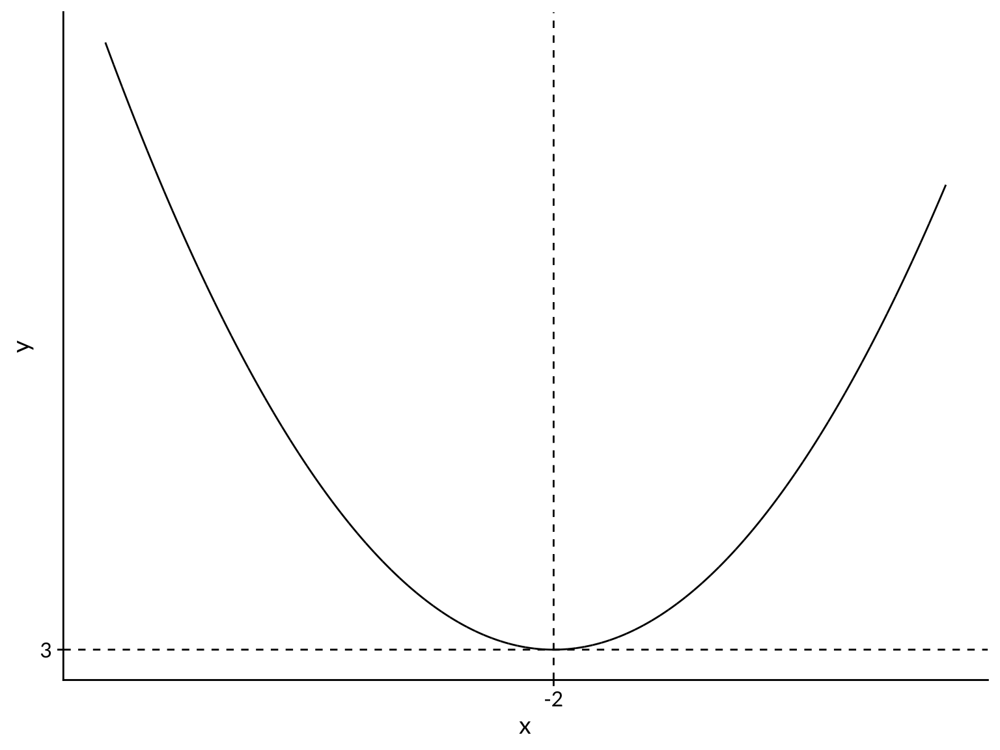

Introduction
Gradient descent is an optimization algorithm that finds the minimum of a function. Commonly, the function to be minimized is a loss function: a function that quantifies the “badness” associated with the given inputs, which you would naturally want to minimize. A common loss function is the mean-squared error. For example, using mean-squared error, the loss incurred by an inaccurate prediction is the squared distance from the prediction to the true value. Neural networks are commonly optimized using some form of gradient descent.
Let’s start with a simple example, where we already know the answer. We wish to minimize the quadratic function given by
\[ f(x) = (x + 2)^2 + 3 \]
The shape of the function, a parabola, is shown in the plot below. Most applications of gradient descent occur in dimensions much higher than 2D, where we cannot so easily visualize the function we are trying to minimize.
Code
x <- seq(-10,5,length.out=1e4)
y <- (x + 2)^2 + 3
plot_data <- tibble(x, y)
plot_data %>%
ggplot() +
aes(x=x, y=y) +
geom_line() +
geom_hline(yintercept = 3, linetype=2) +
geom_vline(xintercept = -2, linetype=2) +
scale_x_continuous(breaks=c(-2)) +
scale_y_continuous(breaks=c(3)) +
cowplot::theme_cowplot(font_family = "Lato")
Finding the minimum is a solved problem using calculus. We can take the first-derivative, set it equal to zero, and solve, to obtain a minimum of \(y=3\), which occurs at \(x=-2\). Then an application of the second-derivative test confirms that it is minimum, rather than a maximum. Our goal is to reproduce this result using gradient descent.
An analogy for gradient descent
Gradient descent works by starting at a location in the space. Then, each iteration of the algorithm it moves downhill with respect to the function, which is by definition opposite the gradient. The algorithm proceeds downhill until it reaches a minimum where the gradient is zero within some tolerance (success) or the maximum number of iterations is reached (failure). Apart from the tuning parameters of the algorithm, which we will discuss later, the only information gradient descent needs to work is the function to be minimized and its first derivative.
Here’s an analogy. Think of a ball moving under the influence of gravity in a landscape of hills and valleys. If you let the ball move freely, it will roll to a point of minimum height in the landscape. Does the ball know the whole landscape and decide to move to the minimum point? No. The only information it uses to find the minimum is the slope at the point it is currently at. The local information is enough. Gravity is constantly moving the ball downhill, based on the slope of the landscape at the current location.
The gradient descent algorithm
The general algorithm for gradient descent is as follows:
- Pick a starting point and a learning rate
- Using the derivative of the function, compute the gradient (i.e., slope) at the current point.
- Compute the step size: \(\text{delta} = - \text{gradient} * \text{learning\_rate}\)
- Set \(x \rightarrow x + \text{delta}\)
- Repeat from step 2 until either delta is below a certain threshold or a maximum number of iterations is reached
Now, let’s go through this step-by-step for our quadratic function example.
- Pick an arbitrarily chosen starting point of \(x=5\). Thus \(f(x) = (5 + 2)^2 + 3 = 52\). We also pick a commonly used learning rate of 0.1.
- The derivative of \(f(x)\) is \(\frac{df}{dx} = 2x+4\). So the gradient is \(2(5) + 4 = \boxed{14}\)
- Set the step size: \(\text{delta} = - \text{gradient} * \text{learning\_rate} = - 14* 0.01 = \boxed{-0.14}\)
- Set the current value of \(x\) to \(x + delta = 5 - 0.14 = \boxed{4.86}\)
- Assume we set the step size (delta) threshold to 0.001 and the maximum number of iteration to 5000. Since neither of these criteria are currently met, we go back to step 2, but now with \(x=4.86\), and repeat until we meet one of the exit conditions.
Implementation in R
Now that we understand the gradient descent algorithm in theory, let’s translate this into R code.
Code
# Define f(x) and df/dx
f <- function(x){(x+2)^2 + 3}
df_dx <- function(x){2*x+4}
# Set learning rate
learning_rate <- 0.1
# Set starting point
x <- 5
# Create a counter to track the iteration
iter <- 1
while(TRUE){ # Loop until we reach exit conditions
# Compute the gradient at the current x value
current_grad <- df_dx(x)
# Compute delta at the current x value
delta <- -current_grad*learning_rate
# Compute the updated x value, given delta
x <- x + delta
# Print the current state of the algorithm
# the glue package is used for printing variables easily
print(glue("Iteration: {iter}"))
print(glue("x: {x}"))
print(glue("y: {f(x)}"))
print(glue("delta: {delta}"))
# Increment the iteration counter
iter <- iter + 1
# Exit if delta is below the threshold or max iterations have been reached
if (abs(delta)<0.001 | iter>5000) {
break
}
}Here’s the output from the beginning and end of the algorithm.
Iteration: 1
x: 3.6
y: 34.36
delta: -1.4
Iteration: 2
x: 2.48
y: 23.0704
delta: -1.12
Iteration: 3
x: 1.584
y: 15.845056
delta: -0.896
...
Iteration: 32
x: -1.994454028624
y: 3.0000307577985
delta: -0.00138649284399963
Iteration: 33
x: -1.9955632228992
y: 3.00001968499104
delta: -0.00110919427519969
Iteration: 34
x: -1.99645057831936
y: 3.00001259839427
delta: -0.000887355420159741
We see that our gradient descent algorithm converged to the minimum at \((3,-2)\), with some error that could be reduced if we lowered the step size threshold.
Animations
Animations are a good way to get intuition on how optimization algorithms like gradient descent work. The animation below shows our algorithm using three different learning rates. The code to create the animations can be found here.
Using a learning rate of 0.01 takes much longer to converge, but with more complicated functions it is less likely to overshoot and miss the minimum. Using a learning rate of 0.95, the algorithm constantly overshoots the minimum and oscillates on either side of it until it finally settles down. A learning rate of 0.1 seems like the best compromise between accuracy and speed, since we know the true minimum.
Special case is when the learning rate is exactly 1: the algorithm will move between two points on opposite sides on the parabola and remain stuck there
In this specific example, a learning rate higher than 1 will constantly overshoot the minimum and will never converge. A special case is when the learning rate is exactly 1: the algorithm will move between two points on opposite sides on the parabola and remain stuck there. See the animation below.
In real applications, where the true minimum is unknown, trial and error is necessary to find a good learning rate. There are more complex algorithms that build on gradient descent to automatically tune the learning rate as the algorithm progresses.
Next steps
In the next post in this series, we will extend our gradient descent algorithm to optimize over more complex functions: fitting a least-squares regression line, and a logistic regression curve.